Methodologies to perform critical
tasks/subtasks involved in the RAN design process.
This section applies only for overlay
projects, the user interested in greenfield only, can skip directly to Section
3.3. In overlay RAN projects, the NaaS operator will deploy a new RAT on top of
its current network. To have a feasible source of information about the
existing RATs and the new one, an audit of the current network is required. The
audit process comprises data collection from the OSS tools and from operators
database/inventory. Information gathered from these two sources will be
consolidated into one single document that will present the current state of
the overall RAN. The process is detailed in the following sections.
3.1.1
Operations Support
Systems Tools Data Collection
RAN vendors implement OSS tools, through
them NaaS operators monitor and manage their network (e.g., Ericssons OSS
Common Explorer, Huaweis U2000, Nokias NetAct). OSS tools provide data from
the live network and must be considered as the most reliable source to identify
the status (on-air, off-air) and logical configuration of each site in the
network.
Furthermore, OSS
tools are the vehicle to obtain the information required in the audit process:
Site and cell names, site and cell logical identifiers per RAT such as physical
cell identity (PCI) for LTE, primary scrambling code (PSC) for 3G and base
station identity code (BSIC) for 2G. With this information, designers can
determine the number of sectors and carriers per RAT of each sitethe first
step in the candidate selection. The basic principle of a network audit process
is to collect all the available OSS networks information. Table 3 and Table 4
display the network information required for the network audit. These
parameters are necessary to identify each site and its RF configuration. Its
important to notice that some identifier names can vary from vendor to vendor.
|
Basic Site and Cell Name per Technology
|
|
LTE
|
WCDMA
|
GSM
|
|
Site Name
Site
Code
eNodeB
Code
Cell
Name
Cell
Code
Site
status
Cell
status
|
Site
Name
Site
Code
Cell
Name
Cell
Code
Cell
Name
Site
status
Cell
status
|
Site
Name
Site
Code
Cell
Name
Cell
Code
TRX
Name
TRX
Code
Site
status
Cell
status
|
Table 3 Site and cell names
|
Basic Logical Site and Cell Identifiers per Technology
|
|
LTE
|
WCDMA
|
GSM
|
|
PCI
PRACH
Bandwidth
TAC
RAC
EARFCN
MME
Code
|
PSC
UARFC
(UTRA Absolute Radio Frequency Channel Number)
URA
LAC
RAC
SAC
RNC
Name
RNC
Code
|
BSC
Name
BSC
Code
BSIC
(NCC+BCC)
TRX
No.
BCCH
HSS
LAC
RAC
|
Table 4 Site
and cell logical identifiers
In addition, some physical site configuration
such as azimuth, latitude and longitude can be collected from the OSS tool
(depends on each vendor tools limitations). Nevertheless, Site Survey report
is the most accurate source to obtain physical information (as will be
described in section 3.2). Table 5 displays required physical information.
|
Basic Physical Site Parameters for All technologies.
|
|
Type
of Site
Frequency
Band
Latitude
& Longitude
Ground
Height
Antenna
Tilt (Electrical +Mechanical)
|
Table 5
Physical site parameters
OSS tools allow NaaS operators to export
the network data in different formats. The default choice is to extract network
information in Excel spreadsheets. Exportable information makes data analysis
and collection easier for NaaS operators.
The source of the data varies based on the
technology: In GSM-2G and UMTS-3G, RAN information sources are network
controllers (base station controller for 2G and radio network controller for
3G) while for LTE-4G sources are base stations themselves; they can be
organized in groups defined by the operator (e.g., by region, by MME). Network
designers must download information from the whole network.
All network information collected should be
unified in one file, preferably in an Excel format, one sheet or workbook per
RAT. An Excel file enables NaaS operator to manage, update and filter
information easily.
3.1.2
Naas Operators
Network Database Analysis
Besides OSS information, NaaS operators
have their own network database that is the as-built database for all
physical configurations. Frequently, an operators database is out of date
mainly because some network changes arent always reflected in it.
Nevertheless, this database is always relied on for physical site configuration
coming from previous RAT deployments. Physical information to be obtained from
operators database is: longitude, latitude, azimuth, electrical tilt,
mechanical tilt, and antenna or tower height.
If the NaaS operators have more than one
network database, its necessary to consolidate the information in one. The consolidation
process is composed by three steps:
- Define number of sites and sectors No site shall be
discarded, even when the number of sites differs between databases. The
consolidated one must contain all sites. The same approach must be applied
to define the number of sectors per site.
- Define physical site configuration Physical site
configuration must be aligned with the more recent database; if one site or sector
is not included, the data can be taken from a previous one that contains
the information.
- Database file building Site information should be unified in
one Excel file, one sheet per RAT.
Its important to clarify that the process
must be applied per RAT since the objective is built to a database with the
physical configuration per technology of each site in the network.
3.1.3
OSS Information and
Operators Database Consolidation
To finalize the current network audit, the
information collected from the OSS tools (site and cell names, logical
identifiers) should be complemented with the consolidated operators database.
(site physical configuration).
Since the OSS information is the most
accurate source of data, sites and sectors contained in the consolidated
database that dont appear in the OSS tools should be removed; NaaS operators
must define the action points to clarify their status.
If there are sites and sectors from OSS
tools missing in the consolidated database, NaaS operators should evaluate the
possibility to do a site survey.
The physical site configuration obtained
through OSS tools should be compared with the consolidated database; the Naas
operator must evaluate its relevance. Physical information from OSS tools could
be not updated or be accurate since theyre mainly used to manage logical
configuration in contrast with consolidated database that comes from site
surveys made in previous RAT deployments.
The
information should be on a single point of consultation. This point can go from
a web-shared spreadsheet (Google Sheet, Office365) to an inventory management
solution. Table 6 shows a summary of some open source inventory management
tools.
|
Feature
|
Kuwaiba
|
AssetTiger
|
ManageEngine AssetExplorer
|
Snipe-IT
|
|
Upgrade Cost
|
Free
|
$100/year
|
$955/year
|
$399.9/year
|
|
Free Usage Limit
|
Unlimited
objects and users
|
N/A
|
N/A
|
N/A
|
|
Mobile App
|
No
|
Yes
|
Yes
|
Yes
|
Table 6
Inventory management tools
A NaaS operator can use the Network Information Management and Inventory for
the creation of its consolidated database.
The current network audit (section 3.1)
focuses on consolidating information available in existing databases (OSS tools
and operators database). However, regarding physical information, the most
reliable source of information is existing site survey reports. An SSR contains
extensive physical information about the sites in the network. During the HLD
phase for overlay scenarios, NaaS operators should be focused on information
regarding geographical site position, physical configuration, and hardware
installed.
During the analysis of SSRs, designers must
validate or update physical site configuration defined in the database created
after the current network audit. The final audit database must be aligned with
SSR information.
By extracting information about installed
RF equipment per site, NaaS operators can identify candidate site configurations.
This information will be useful to define the standard configurations.
Through the SSR analysis, RF hardware
already installed is examined to evaluate the necessity to update the existing
equipment or reuse it (that may reduce the deployment investment). Installed
equipment can be reused if it has enough capacity and/or equipment capabilities
(radio units and antennas operating band) to support the new overlay technology
Under the scope of an overlay RAN HLD, reusable
hardware can be composed of antennas, radio units (RRUs), and baseband units
(BBUs). More details are in section 4.2.4
The master database consolidates
information obtained from the current network audit and site survey analysis
and must be the source of truth for network information containing
information from all sites in the network. Collection of the information in
only one source is the Master Databases objective. furthermore, its essential
to obtain accurate coverage plots and one of the main inputs for the deployment
phase.
The master database creation process is
divided in three steps:
- Network Current Audit Consolidation between OSS
tools information (logical site configuration) and operators database (physical
configuration) to generate final audit database.
- Site Survey Analysis Since the SSRs contain
the most accurate physical site configuration, the final audit database must be
updated with the available reports.
- Site Categorization All
sites in the network must be categorized as candidate or non-candidate and each
candidate must be associated with one standard configuration (section 3.9). An
existing site can be considered as a candidate if it complies with basic criteria such as: available
tower space, available power supply, and acceptable rental costs, among others.
A NaaS operator can use the Site Location
Validation Questionnaire template to evaluate a site as a candidate
or non-candidate.
Basic information to be contained in the
master database is:
- Physical site configuration
(e.g., height, number of sectors and cells, azimuth, and tilts)
- Site and cell names
- Site and cell logical identifiers
- Site category (candidates, non-candidates)
Note: Site category can be defined based on the Site Location Validation Questionnaire template
For
greenfield projects, a master database or inventory is to be created as well to
keep track of the designs and register sites on-air as deployment progresses.
NaaS Operator can make use of the Master Database Template to work on its own version or
use one of the Inventory Tools described in section 3.2.
Radio link budget (RLB) is the
first step to estimate the required number of sites to cover a certain area.
RLB computes the power received by the user equipment (UE) given a specific
transmit power from the base station.
Received power is obtained by
adding transmit power to both base stations and UEs antenna gains and
subtracting feeder losses, path loss, body loss, shadowing and interference
margins. Eq 1 summarizes the RLB process. Figure 5 displays a representation of
the RBL process in a mobile system.
(Eq. 1)
Where:
● - Received Power
● 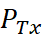- Transmitter Power
● 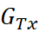- Gain of the base station antenna
● - Gain of the User Equipment antenna
● - Feeder Loss
Indicates the signal loss caused by various devices (e.g., jumpers, cables) located in the path from the transmitter to the antenna
● - Path Loss
● - Body Loss
Indicates loss generated due to signal blocking and absorption when the user’s equipment is close to the person’s body.
● - Shadow Margin
An extra “loss” is considered to account for obstacle absorption of the radio signal.
● - Interference Margin
An extra “loss” is considered to account for degradation in the received signal due to interference from other base stations.
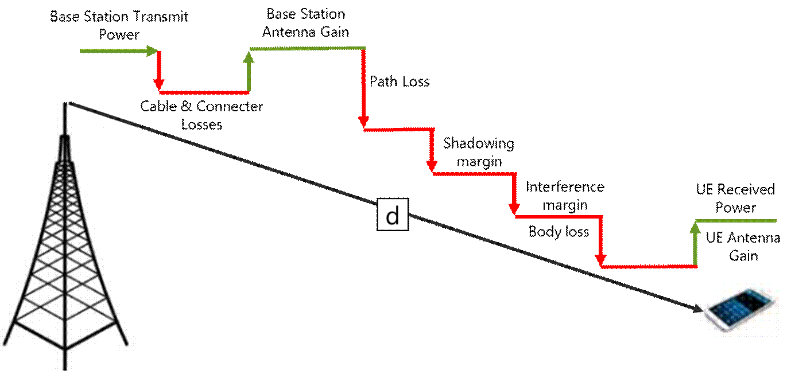
Figure 5. Radio Link Budget
representation.
Eq. 1 must be rearranged to perform
coverage dimensioning using RBL. UE received power can be substituted with its
sensitivity (minimum required power for the signal to be decoded at the UE).
Considering this, the designer will be able to estimate the maximum loss that
the signal can suffer for the UE to work properly. As the main loss present in
the mobile system is due to the path loss, a maximum allowed path loss (MAPL)
can be estimated as shown in Eq. 2:
(Eq. 2)
Where:
● 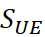- Sensitivity of the user equipment
Once the MAPL is known, the cell
radius can be obtained using a propagation model. Propagation models are used
to estimate the attenuation of the radio wave as it traverses its path. A
variety of propagation models exist, and their application is determined by two
main factors:
- Operating frequency.
- Morphology (clutter) under consideration. Clutters can
be classified as follows:
- Urban This environment
consists mainly of large buildings (that produce major attenuation) and small
density of foliage.
- Suburban This environment
presents wide-ranging housing areas that includes some vegetation. Suburban
environments are mostly found at the border of urban areas, spreading outward
from the city centers.
- Rural This environment
represents wide areas with a small density of buildings and large density of foliage.
Major attenuation is due to the foliage present on the terrain.
The designer can follow these criteria to quickly
choose a propagation model:
- For frequencies up to 1500 MHz, Okumura-Hata should be
considered.
- When using a frequency
greater than 1500MHz and up to 2000 MHz, COST-231 model should be considered.
The technical aspects of propagation models
are discussed in the Primer on
Propagation Models..
Okumura-Hata and COST-231 models require
the height of the base station as an input for the loss prediction. Network designers
must consider the fact that the selection of a transmitters height represents
a trade-off between coverage, number of sites, and financial investment.
Higher base stations represent better
coverage per site, requiring fewer sites per region. However, higher sites cost
more to build and cost goes up exponentially with tower height. Network
designers must find a balance between the number of sites per region and the
financial constraints involving site height. Further guidance and a design
example are provided in section 4.2.8.
If path loss is known (shown in Eq. 2),
then cell radius can be computed by solving the propagation models equation
for d (see Primer); this can be done practically using the Widget for Coverage-Based Site Count.
Table 7 shows examples for 700MHz
and 1800MHz:
|
Frequency
|
Transmitter Height
|
Transmit Power
|
Cell Radius
|
|
700 MHz
|
15 m
|
20 W
|
4.70 Km
|
|
30 W
|
5.24 Km
|
|
700 MHz
|
20 m
|
20 W
|
5.43 Km
|
|
30 W
|
6.07 Km
|
|
700 MHz
|
30 m
|
20 W
|
6.73 Km
|
|
30 W
|
7.55 Km
|
|
1800 MHz
|
15 m
|
20 W
|
0.84 Km
|
|
30 W
|
0.94 Km
|
|
1800 MHz
|
20 m
|
20 W
|
0.94 Km
|
|
30 W
|
1.05 Km
|
|
1800 MHz
|
30 m
|
20 W
|
1.10 Km
|
|
30 W
|
1.23 Km
|
Table 7 Cell radius
calculation
Cell radius based on link budget should be
taken as the best case as its based on average calculations and doesnt take
into account all obstacles and propagation mechanisms of the signal.
Once cell radius
is estimated, it can be used to calculate the number of sites required to cover
the whole area with respect to the cell radius d. By convention, cell
coverage area is assumed to be hexagonal as shown in Figure 6.
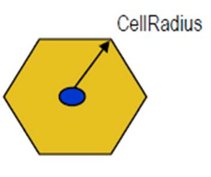
Figure 6 Coverage area of a radio site
For a hexagonal site, coverage area can be
calculated as follows:
(Eq. 3)
The number of sites to be deployed can be
calculated from the coverage area and the required area to be covered
(deployment area) as follows:
(Eq. 4)
Even the link budget is based entirely on
mathematical equations; a complete RAN HLD can be achieved by only applying it.
A more detailed planning can be done by using a radio planning tool (RPT)
thanks to the use of terrain information. However, the use of an RPT is
optional in uncovered rural environments.
A NaaS operator can use the Widget for Coverage-Based Site Count for this task.
When a RAN design project is to be performed, RPTs
can be used for simulations and location of new sites. These make use of
sophisticated and detailed terrain maps: terrain elevation maps, demographic
distribution maps, and clutters that make the design more detailed. Thanks to
this, RPTs can use several more complex propagation models that account the
terrains profile (e.g., mountains) into the loss prediction (details about RPT
configuration are out of the scope of this module).
However, the use of an RPT in the RAN HLD is
optional for uncovered rural areas. As will be shown later, location of new sites
and coverage planning can be done following the link budget procedure.
There is a wide variety of RPTs that can be
classified in several manners: licensed and unlicensed, carrier and WISP grade,
and web-based. To simplify RPT selection, Table 8 displays a summarized
description of some RPTs.
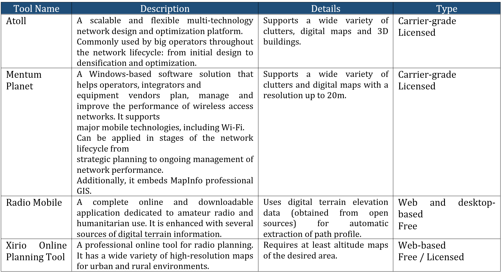
Table 8 Summary of radio planning tools
A first step in selecting an RPT is
to always consider the budget of the operator.
The next step is to define which tool features
will be required. For the creation of the RAN HLD, at a minimum a designer
needs to be able to estimate the transmitter height, transmitter power, number
of sites, and sectors per siteas well as be able to locate the site in the
desired location (described in section 3.10). Site planning will be a desired
feature to speed the HLD process but not a mandatory one. Additional features such
as frequency planning, neighbor planning, physical optimization, and database
management will impact the low-level design (LLD). An operator can selecting an
RPT just for the HLD process, which translates in selecting a WISP grade tool.
Table 9 summarizes features of the tools listed above. An
operator can choose an appropriate RPT based on it.
|
|
|
Carrier Grade Tools
|
WISP Grade Tools
|
|
Planning Tool
|
Atoll
|
Mentum Planet
|
Radio Mobile
|
Xirio Online Planning Tool
|
|
Estimation of Sites Azimuth & Tilts
|
Yes
|
Yes
|
Yes
|
Yes
|
|
Support for Detailed Map information
|
Yes
|
Yes
|
Yes
|
Yes
|
|
Site Planning
|
Yes
|
Yes
|
Yes
|
Yes
|
|
Frequency Planning
|
Yes
|
Yes
|
No
|
Yes
|
|
Neighbor Planning
|
Yes
|
Yes
|
No
|
No
|
|
Physical Optimization
|
Yes
|
Yes
|
No
|
No
|
|
Database Management
|
Yes
|
Yes
|
No
|
No
|
|
Price
|
High
|
High
|
Free
|
Medium
|
Table 9 Summary of radio planning tools and features
Radio equipment has capacity limitations driven
by two main factors:
- The maximum number of
simultaneous active users that a single base station can serve.
- The maximum throughput
supported.
These
two factors must be analyzed separately and their results compared to compute
the required number of radio units based on capacity requirements.
3.7.1
User-Based Capacity
Dimensioning
This is defined as the maximum number of simultaneous
active users varies from one equipment to another. To have the exact value,
network designers must identify it from the product description of the specific
equipment. However, a good approximation is to consider that 100 simultaneous
active users are supported per radio equipment. The following steps must be followed
for the user-based capacity dimensioning.
Subscriber Forecast:
Network designers must obtain the total
number of subscribers that will be served in the required area. This value is calculated
by the following equation:
(Eq. 5)
Where
- - Population Target: Reflects the total number
of inhabitants in the area. This quantity exclusively depends on the target
area defined by the NaaS operator.
- - Service Penetration: Percentage of the
overall population that will be covered. This quantity is based on the NaaS
operators business case. Values between 40% and 60% are commonly used for
rural environments with no competition.
Active Users Forecast
Not all subscribers will always be served
simultaneously. The percentage of active users in the busy hour (the time where
a peak in the service exists) is considered to dimension the number of active
users in a network.
(Eq. 6)
Where
- Is the percentage of subscribers who are
active in the busy hour of the day. This input can be Provided by the NaaS
operator. However, 5% can be taken as a starting value.
Equipment Dimensioning
Finally,
the number of active users must be compared with the maximum active users
supported by the radio equipment.
(Eq. 7)
Where
- Is the maximum concurrent users per eNB.
3.7.2
Throughput-Based
Capacity Dimensioning
In a
similar way that the base station supports a determined number of simultaneous
active users, it also has a limited downlink (DL) and uplink (UL) throughput.
For this reason, an evaluation of the overall DL and UL throughput must be done
to evaluate the required number of sites.
The first step is to compute the overall DL and UL traffic that will
be generated by the active subscribers during the busy hour (time frame of one
day where the maximum amount of traffic is carried in the network.). Eq.8 and
Eq.9 show how to compute these figures for DL and UL respectively.
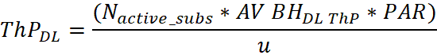
(Eq. 8)
(Eq. 9)
Where:
-
&
-
Average DL & UL throughput that the
network carries during the busiest hour of the day. Depending on the specific
environment, typical values go from 16 kbps to 128 kbps.
-
(Peak-to-Average Ratio) Is the relation
between the peak throughput and the average throughput. As bursty traffic is
common, values between 6 and 10 can be used if no previous data is available.
-
(Overprovisioning Factor) Is a percentage of
the total eNB capacity that will be used for the dimensioning, leaving the rest
percentage of the capacity as a backup for special events or future network expansion. Typical values are
between 70% and 90%.
- Is the relation between
maximum throughput and subscriber throughput in the busy hour.
The next step is to compare the calculated DL and UL traffic with
radio equipments average throughput capacity as shown in Eq. 10 and Eq. 11. If
equipment average throughput data is not available, the typical values of an
LTE system can be considered. Table 10 displays cell average throughput for
different scenarios and bandwidths.
Table
10 Typical average sector throughput for LTE-FDD (considering MIMO 2x2)
The comparison
between overall DL and UL throughput and equipment average throughput capacity
will result in the required number of radio equipment to support the DL and UL
demand.
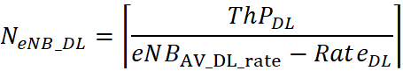
(Eq. 10)
(Eq. 11)
Where:
-
&
eNodeBs
average DL and UL throughput
-
&
Maximum allowed DL and UL rate per subscriber.
The required number of eNodeBs is
calculated as the maximum between and :
(Eq. 12)
3.7.3
RAN Equipment Count
Final eNodeB count will be obtained from the comparison of
the user-based vs. the throughput-based capacity dimensioning. The maximum
between and  will
give as result the final eNodeB count.
will
give as result the final eNodeB count.
(Eq. 13)
This calculation can be easily done through the Widget for Capacity-Based Site Count.
High-level site configuration is a combination
of the following parameters: operating frequency, antenna height, transmitter
power, number of sectors, and type of antenna. Based on the combination of
these parameters, network designers can create specific configurations,
simulate them and finally select that one performs better in terms of coverage,
site count and cost. Deeper insight into the selection of the best
configuration is made in section 4.2.8.
Based on RF specifications from RAN
architecture module, standard configurations must be defined and registered.
The following are the steps to define
standard configurations:
- Various combinations of antenna
height, transmitter power and number of sectors should be considered. At
least one macro cell and one small cell configuration should be considered
based on Table 11 below.
- For each combination, cell radius can
be calculated and a quick dimensioning to obtain the number of sites can
be performed as indicated in section 3.5.
- Based
on cell radius and feasible options regarding tower height and transmit
power, select standard configurations to be used for nominal site location
estimation.
|
Base Station Type
|
Antenna Height
|
# of Sectors
|
Transmitter Power
|
|
Macro
Cell
|
>
10m
|
1
to 3
|
>10W
|
|
Small
Cell
|
<
10m
|
1
|
<
10W
|
Table 11. Base Station categorization.
|
Cfg. ID
|
Base Station Type
|
Cell Bandwidth
|
Operating Frequency
|
Antenna Height
|
# of Sectors
|
Tx Power
|
Cell Radius (Km)
|
|
Config.
1
|
|
|
|
|
|
|
|
|
Config.
2
|
|
|
|
|
|
|
|
|
|
|
|
|
|
|
|
|
|
Config.
n
|
|
|
|
|
|
|
|
Table 12. Sites Configuration.
After computing the number of base stations
to cover the target area, the initial locations for those sites (referred to as
nominal sites) must be defined. In a greenfield scenario, network designer must
follow these next steps to establish the nominal site locations:
- Introduce third-party infrastructure locations (e.g., existing towers) to a GIS tool (e.g., Google
Earth) as shown in Figure 7. The set of third-party
infrastructures is an input to the network designer. If no third-party infrastructure
is available, go to step 3.
- Create a hexagonal polygon, considering the location of existing
towers as the hexagons center, as shown in Figure 8. The
radius of the hexagon must be set using the Widget
Coverage-Based Site Count using the height of
the existing tower. Its a convention to consider the sites coverage
area as having a hexagonal shape (when the real coverage region can have an
irregular form). This is made to facilitate the
filling of the coverage.
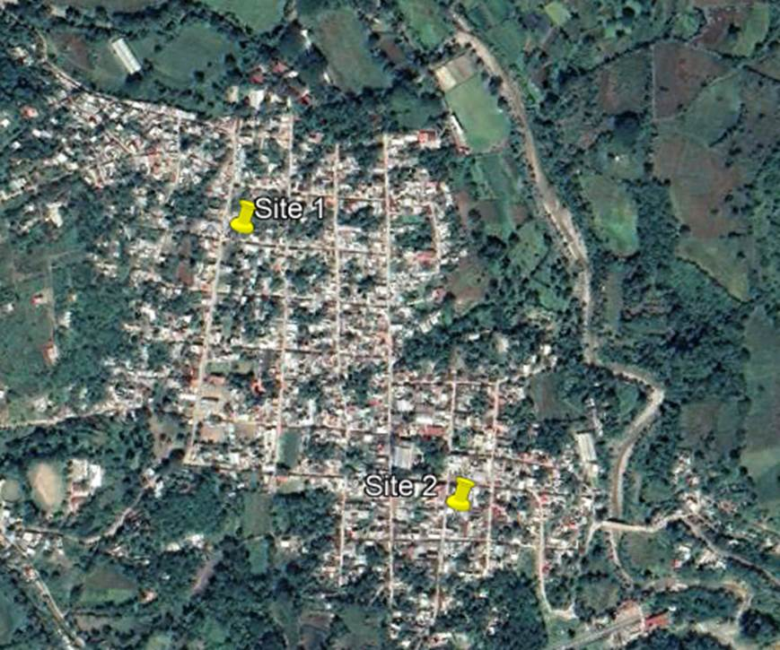
Figure 7. Location of existing infrastructure on the map.
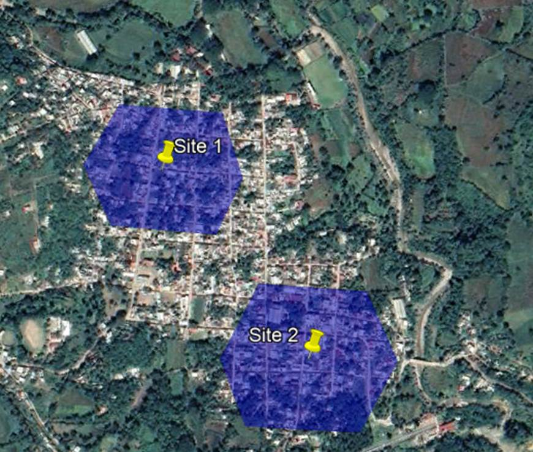
Figure
8. Hexagonal coverage for existing infrastructure.
-
Uncovered areas of the desired region must be filled with
hexagonal shapes until the whole region is covered. The center of each new
hexagon will be considered as the sites location. Figure 9 displays this
process.
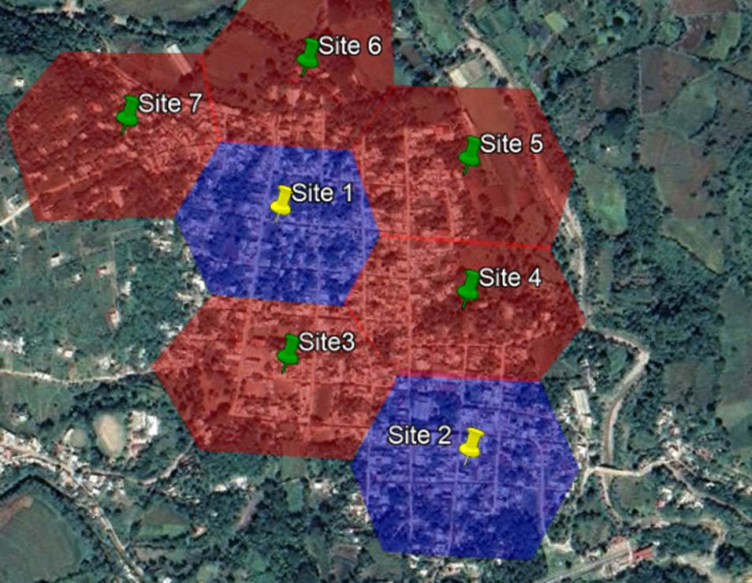
Figure 9 Filling of the remaining area
- The designer must verify
that the sites defined in step 3 are located in valid locations:
- Valid Locations: Rooftops or vacant sites
- Non-valid locations: Water bodies, the middle of
the street, dense foliage locations, countrys regulations.
Further
discussion about valid and non-valid locations must be taken by NaaS operators
strategy team.
The network designer
must notice that nominal locations can be changed due to external RF factors
such as: transport solution feasibility, countrys regulations, or any point
considered in the site evaluation criteria.
RF site configuration refers to the
physical parameters in a radio base station: base station type, antenna height,
number of sectors, and transmitting power. Standard configurations were
previously defined in section 3.9.
Based on the site count (coverage and capacity),
standard configurations, and nominal locations, the network designer is able to
select the standard configuration(s) that best suit the coverage and capacity
requirement.
Table 13 can help the
designer to summarize site configurations.
|
Cfg. ID
|
Number of Sites
|
|
Cfg.
1
|
1
Site
|
|
Cfg.
2
|
2
Sites
|
|
|
|
|
Cfg.
n
|
n
Sites
|
Table 13. RF Sites Configuration distribution.
This represents an iterative process where
several configurations must be analyzed to define which sites maximize the
coverage region with the smaller number of base stations while keeping the
CAPEX low. Implementation considerations are analyzed in section 4.2.8.
Once that nominal site locations have been
estimated, location feasibility must be validated.
This can be done through satellite imagery
or using existing information from the site; however,
in most cases a site survey must be performed.
The Site
Location Validation Questionnaire is provided to the NaaS
operator to evaluate all sites and candidate sites based on points previously
discussed in section 2.5. Clauses in the questionnaire are considered as
critical points. Thus, if a clause is not compliant, the site must be relocated
or the candidate site dismissed.
Further guidance to perform site survey can
be found in the Site Survey Module of the Playbook.